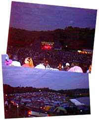
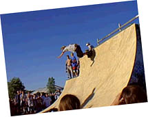
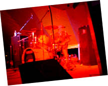

It's more than a music party -- Tucked behind the underground tent is Cornerstone's ArtRageous and Imaginarium exhibits. Authors, painters, and others of a creative bent can enjoy conferences, discussion, and great coffee. The midnight film festival was cool, too...
So much music, so little time... Sob! Here's a peek at some of the cool stuff I stumbled across over the course of the festival. Some oldies and some fresh stuff -- no matter what the genre, it's hot stuff.
Follow the adventures of Squeaky the Duck on his adventures at the fest. From his near-death experience at the hands of Kevin131 to a DC Talk sighting, he's been almost everywhere.
Well, T-shirts, too. Cornerstone is a great place to find a variety of wacky hairstyles, and most of the owners are good natured sorts who're quite willing to offer their coifs for a good cause -- this page, for one!
What do you get when you put a bunch of music-obsessed usenet junkies in one place? Vibrating hairrushes. That's what. The fourth annual RMC Cornerstone picnic is here, captured in bits and bytes for all of posterity...
Whether it's beating the heat, finding munchies, or selecting that perfect camping site, there's someone who's been through it and has some words of wisdom to offer. Recorded here for posterity are essential Cornerstone survival skills.
Since April 20th, visitors have explored the fest. C'mon in!
The images and content of Cornerstone: Off The Beaten Path are ©1998, Jeff Eaton. If you're interested in using a few of the photos, or excerpts from the text, drop me a line at eaton@wwa.com. Thanks!
Every year, three hours south of Chicago, on the Illinois-Iowa border, a small farming community by the name of Bushnell plays home to twenty thousand music lovers. Hundreds of bands. Artists. Speakers. Food. Parties. Raves. Fun. It's a tradition. It's a party. It's an experience. It's Cornerstone.
This page, for what it's worth, is a completely subjective acount of Cornerstone, the greatest music festival known to humankind. The fest is organized and run by Jesus People USA, a group of Christians in inner city Chicago. Conferences and guest speakers, hundreds of concerts, artists galore, movie showings... It's all there.
Approaching Cornerstone farm the first time is like being escorted to the entrance of an alternate universe. Ravers, hippies, goths, youth group leaders, punks, metalheads, and every imaginable clique can all be found in happy coexistance. Even wilder -- the Bushnell locals, outnumbered almost ten to one by fest-goers, are thrilled. The police department doesn't bother assigning extra officers, and the small town is packed with signs welcoming the fest. Of course, garage sales spring up everywhere, too... the potential customer base increases by an order of magnitude when Cornerstone arrives!
I've heard stories of Cornerstone for years from friends on the net -- most notably, the denizens of rec.music.christian, known for their ecclectic tastes and appreciation for wackiness. Finally, in '96, I made my first trek. Braving dust, heat, and a tragic lack of lemonheads, my friends and I overdosed on great music and delicious atmosphere. We declared it good, and on our way out, wrote 'Cornerstone '97 or bust!' in the dusty windows of parked cars.
Lo, a year later, the '97 fest arrived... This time, we were ready.
After a late night of packing and preparing for the fest, I headed over to meet up with Jason, Beck, and the rest of the gang that would form our Cornerstone Caravan. We were only three hours from Bushnell, but taking the trip in a group is a great way to make the hours fly faster.
With a quick prayer, we split. Jason, Kellen, Andrew and I took Jason's car, affectionately known as the Millenium Falcon for its habitual fussiness. Naturally, we hauled a CD player along: over the course of the trip, we shuffled between Flemming and John's Delusions of Grandeur, Klank's Still Sufferering, and the Hackers soundtrack.
Being the cushy suburbanites that we are, Jason and I had pooled for a motel room in Galesburg, about forty-five minutes away from Cornerstone Farm. Had we planned earlier, we could've cut the distance in half, but alas -- by the time we called around, everything within forty miles of Bushnell was booked up solid! After- getting off the highway (no car breakdowns, yeah!) we stopped at our motel, unloaded the carfull of pretzels, pop-tarts and Mountain Dew, and headed out.
There's no way to see everything at Cornerstone -- if you stopped sleeping for a week straight, rented a golf cart, and spent every waking moment zipping from concert to tent to conference to exhibit hall, there would always be a million more things waiting to be explored. Here you'll find an incomplete but hopefully entertaining account of what I've gotten out of the fest. It's peek at the experience for those who've never made the Bushnell trek before and a bundle of memories for those who've done it and loved it. There are quite a few cornerstone related sites out there, including the official one at jeasusfreak.com, and you should check them all out if you want a broader view of the Cornerstone experience.
With that in mind... Explore, and enjoy!